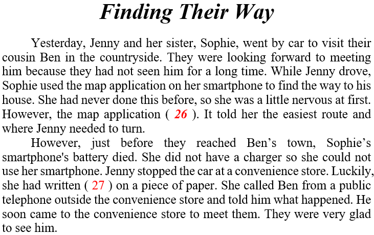
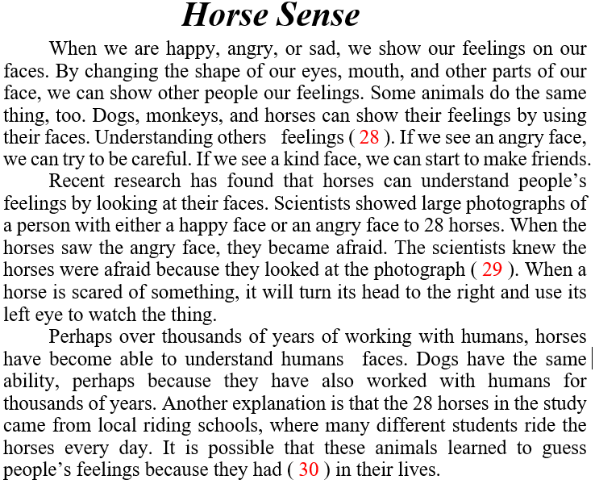

英語検定 準２級(2021年第2回No.3) 残り時間が0になると、自動的に採点します。 時間内に終了する場合は、一番下の「採点する」のボタンを押してください。 残り時間： 分 秒 2-3 英語検定(準２級) 筆記 2021年第2回(No.21～No.30) 問21 次の四つの会話文を完成させるために、 (21) に入るものとして最も適切なものを 1～4 の中から一つ選びなさい。 A Did you do anything exciting on the weekend, Liz? B Yes, I did. I went ( 21 ). A Really? How was it? B It was great. The action scenes and the music were amazing! 答え： (1) to watch the monkeys at the zoo (2) to see the new superhero movie (3) walking in the mountains (4) fishing at the lake with my brother 問22 次の四つの会話文を完成させるために、 (22) に入るものとして最も適切なものを 1～4 の中から一つ選びなさい。 A Excuse me, Officer. I can't find my son. He's only four years old. B OK, ma'am. Please don't worry. Where did you ( 22 )? A He was with me in the bookstore on the first floor of the mall. B He probably went to the toy store. All the little boys love it. 答え： (1) go to school (2) see him last (3) drop it (4) buy that book 問23 次の四つの会話文を完成させるために、 (23) に入るものとして最も適切なものを 1～4 の中から一つ選びなさい。 A Welcome home, Jamie. How was your soccer match? B ( 23 ), Dad. A Why? Was it because of the rain last night? B No. The other team's bus broke down, so the players couldn't come to the soccer field in time. 答え： (1) The field was very wet (2) My team lost six to one (3) It was canceled (4) I scored two goals 問24 下の会話文を完成させるために、 (24) と(25)に入るものとして最も適切なものを 1～4 の中から一つ選びなさい。 A Good morning. Welcome to Book Forest. How can I help you? B Hi. I'm looking for a book called Under the Ground. A Do you know ( 24 )? B I think it was written by someone called Mark Stanley. A Let me check ... I'm sorry. ( 25 ). B Can I order it here? A Of course. It might take a week or two to arrive, though. B Thafs OK. I don't mind waiting. 答え： ( 24 ) (1) what the story's about (2) how much it costs (3) who the author is (4) when it was written 問25 答え： ( 25 ) (1) Our store will close soon (2) We don't have it right now (3) I've never read that book (4) He isn't here today 問26 次の英文を読み、その文意にそって(26) と(27)の( )に入れるのに最も適切なものを 1～4 の中から一つ選びなさい。  答え： ( 26 ) (1) was easy to make (2) was very helpful (3) cost a lot of money (4) stopped working 問27 答え：( 27 ) (1) Ben's phone number (2) the name of Ben's town (3) her home address (4) what she needed to buy 問28 次の英文を読み、その文意にそって(28)から(30)の( )に入れるのに最も適切なものを 1～4 の中から一つ選びなさい。  答え： ( 28 ) (1) is not always useful (2) is often not easy (3) takes a long time (4) helps us stay safe 問29 答え： ( 29 ) (1) very carefully (2) several times (3) for less than one second (4) with their left eyes 問30 答え： ( 30 ) (1) many good friends (2) plenty of food (3) been to many places (4) seen a lot of people


 英語検定 準２級(2021年第2回No.3)
英語検定 準２級(2021年第2回No.3)